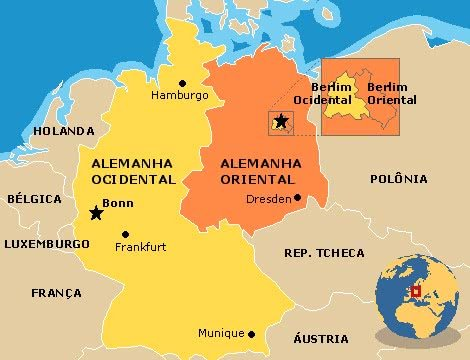

Marco e dimensão
A Guerra Fria conteceu após o fim da segunda guerra mundial. Esse periodo foi marcado por uma crescente bipolaridade politica, ecônomica e principalmente ideológica. tratava-se de um antagonismo entre entre o capitalismo(um sistema mundial) e o socialismo(um sistema regional)
Algumas nações, como Alemanha e a Coreia, sofreram diretamente com a influênci das duas grandes potências. A cidade de Berlim, apesar de estar localizada na área alemã recebia influência soviética, foi dividida em duas zonas. A parte ocidental controlada pelos frenceses, britâticos e americanos ficou conhecida por RFA (República Federativa Alemã) e a aprte controlada pelos sovienticos de RDA (República Democrática Alemã), tornado-se o símbolo do mundo "bipolarizado" que caracterizou a Guerra Fria.

Alguns estudusos falam que o marco inicial da Guerra Fria foi a Conferência de Postdam ocorrida em meados de 1945. Já outros falam que causou a guerra foi o pronunciamento do presidente americano Truman. Ele em um dos seus discursos declarou que estaria prnto para defender e protejer militarmente qualquer nação vulnerável a "imposições de ideias comunistas" com o lançamento da Doutrina Truman.
Nos momentos finas da Guerra, a queda do muro de berlim, em 1989, é apontada como o símbolo do término da tensão bipolar. Depois da Segunda Guerra Mundial, dois polos econômicos foram criados. De um lado os capitalistas (Estados Unidos) e do outro os comunistas (URSS).
Plano Marshall
Logo após o fim da Segunda Guerra Mundial, os Estados Unidos, preocupados com o crescimento e a difusão de ideias comunistas em suas áreas de influência, delinearam e implementaram um plano de ajuda econômica às nações do pós-guerra. O Plano Marshall, como ficou conhecido, ajudou a promover a recuperação de várias nações capitalistas, evitando, assim, que elas optassem pelo modelo comunista como caminho de superação das dificuldades econômicas geradas pelo conflito.
Comecom
A reação soviética ao Plano Marshall levou à imple mentação do Conselho para Ajuda Econômica Mútua (Comecom), que deveria cumprir papel semelhante ao pla no estadunidense. Os países que estavam sob a órbita da influência soviética, por meio do auxílio econômico, teriam que permanecer assim. O Comecom, portanto, deveria minimizar a possível atratividade que o modelo capitalista poderia, eventualmente, exercer.
Alianças militares
Alianças militares foram estabelecidas entre os principais membros de ambos os blocos. A Organização do Tratado do Atlântico Norte (Otan) representou a aliança militar entre vários países do bloco capitalista (estadunidense e europeu) contra qualquer possível ofensiva comunista. Da mesma forma, o bloco comunista aliou-se militarmente com as mesmas ideias básicas em relação às potências capitalistas. A aliança entre as principais nações comunistas do Leste Europeu ficou conhecida como Pacto de Varsóvia.